As a group, we decided that the common shape would be a triangle. The triangle at the base had a curved edge which each person in the group would use as the base shape for their own shape, building upon it to create a new shape. We each added some identifiable shapes to the other sides, but they weren't super complicated so that we knew what we were working wit. For my shape, I had no idea what I was going to do, and I'm not the most skilled with Illustrator, so I opted for adding two different rectangular shapes on the left side of the triange.
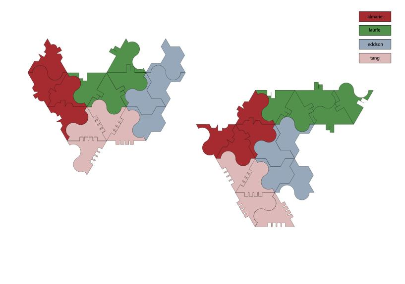 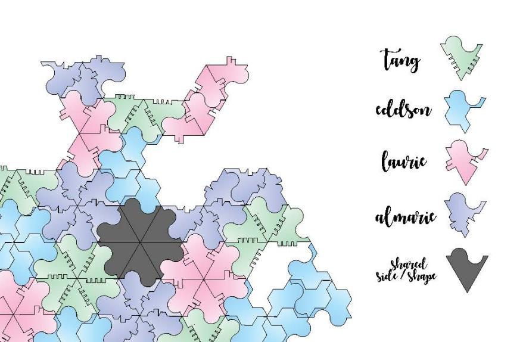 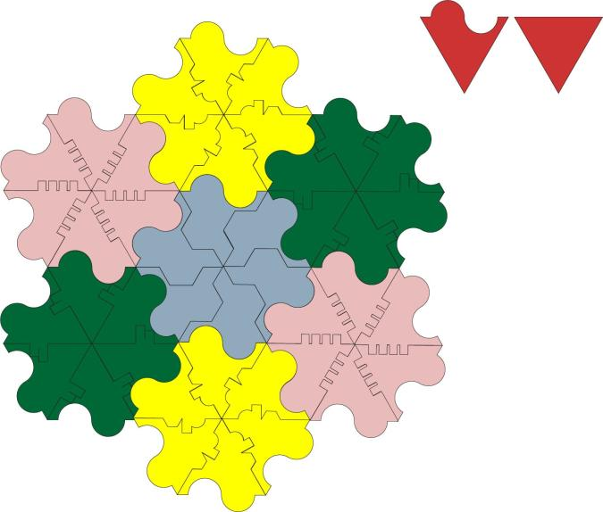 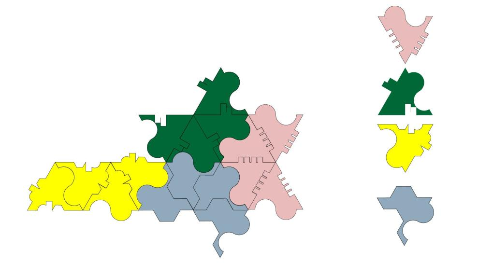As a group, we had decided to use kiragami as the base method for how we would come up with fastener. We all used paper to create our designs. We didn't have a set path for what each of us were going to do, other than that we wanted to use kiragami as the method for a fastener.
With my fastener, I chose the a triangle shape with slits that on each side of the triangle to create a modular design. At the beginning, trying to put the pieces together was hard due to some of the pieces not being the right size, but it created an object that looked similar to a soccer ball. Some of the pros are that it wasn't too hard to make that many triangles and put them together because I made them small enough to where it would work well and not be overwhelming. The con was that it looks super symmetric and I'm not sure how I would be able to place things in a different way. Another thing was that it was difficult to remember which side aligned with the other side because I would mix it up as I continued to cut the paper.
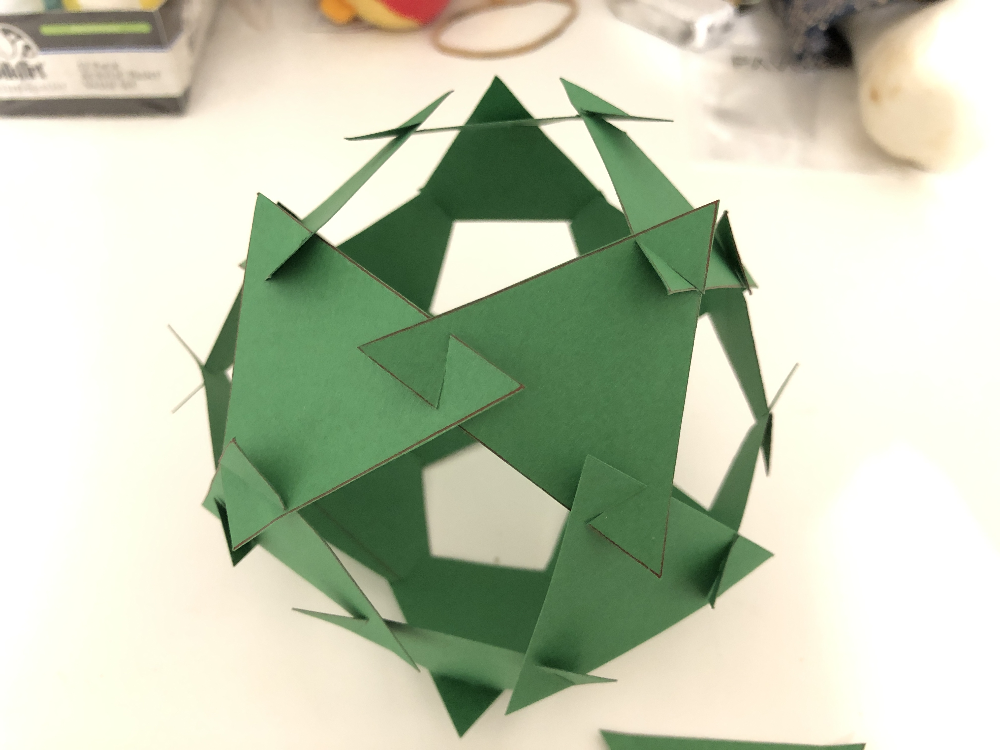 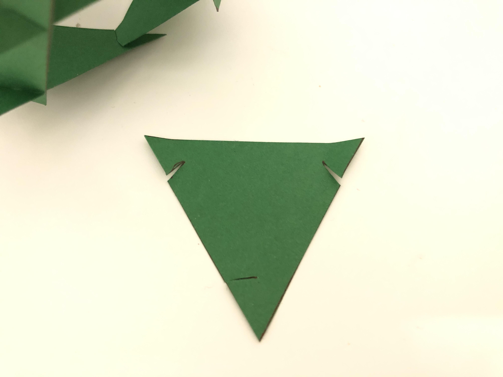 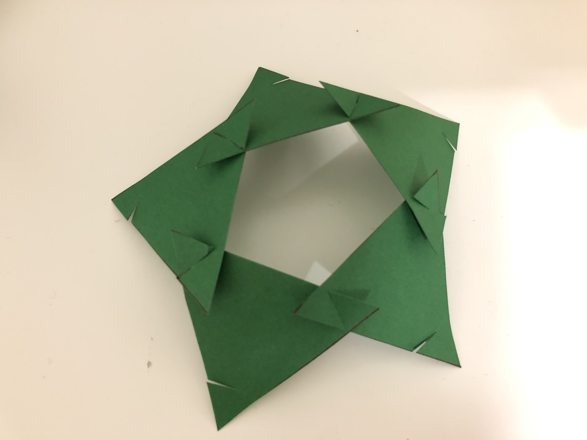The approach that my group had when making these pieces was to try to make something that could connect to each other, but still have some sort of diversity to the shapes. Most of the fasteners were the same, but we had made some that were different and didn't connect with the other pieces. Each of the pieces I think we could've made some other fasteners that would've aligned differently to have more variety in the way that the pieces could (or couldn't) fit. It was interesting to see what we could come up with in a short amount of time, asnd see how the end result is.
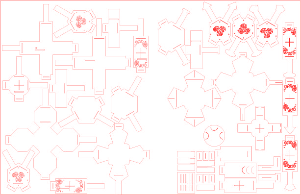 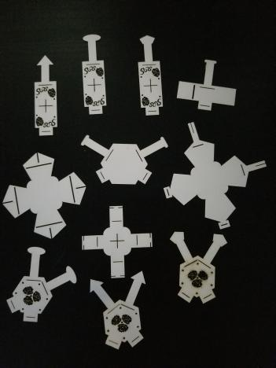 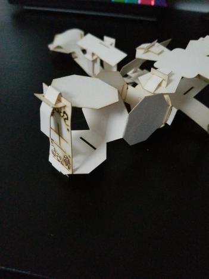 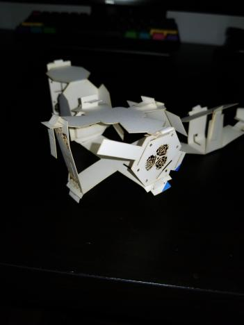Each of us had different designs for fasteners, Tang's was the most secure out of the four we had used.
These were the first pieces that we had come up with for the schema. As a team, we wanted to create animals with different types of body parts that would join together to make a creature. The first design didn't work out well because all of the pieces were a little too different, and the concept that we had orignally started with had shifted a little. The fasteners in the second photo were more secure, and fit eahc piece better together.
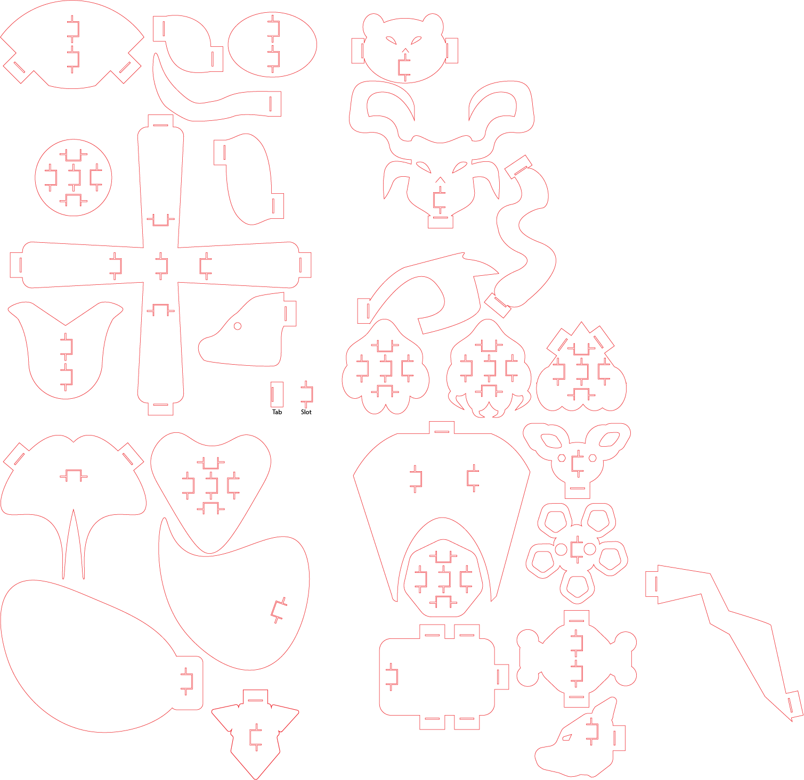This is an example of how the slot and tabs work together to create the peices and hold them in place.
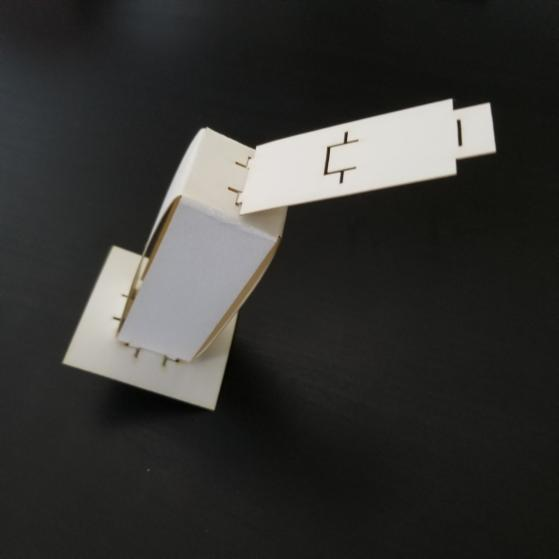These are some images of the pieces together to create a monster. The person putting the pieces together are able to make monsters of their own, using at least one head, creating a body, and adding feet. The process of putting the pieces together is up to the creator.


At first, the group didn't know exactly what we had wanted to do for this assingment. There was a lot of experimentation in terms of understanding how to create pieces that would fit with one another. Each member made different connecting parts that would come together, resulting in some kind of creature. There isn't a real method for how to put the pieces together, which allows the "creator" to do whatever they please. While making my pieces, I used more organic looking shapes for wings and feet. What's nice about the intention of "Build-A-Monster" is the building of the monster is up for interpretation; whether the person wants to build something that looks like something from the real world, or from their imagination.
Some things that were successful with this project I think was how as a group we were able to fix the fasteners and make them work the second time we used the laser cutter. The execution of the project was changed a few times because we weren't sure about what to do in the beginning, but through communication, everything went smoothly. I think something that could be improved is making sure that all of the slots and tabs were the same size, as well as making pieces that had the same amount of tabs/slots as other pieces that way we could've built more onto the monsters.